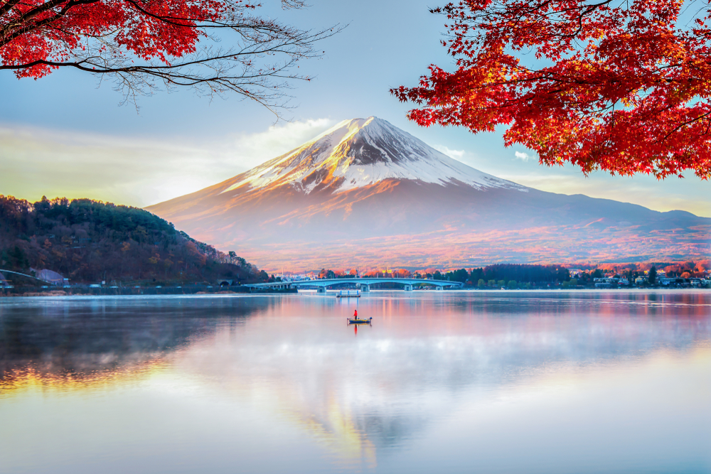
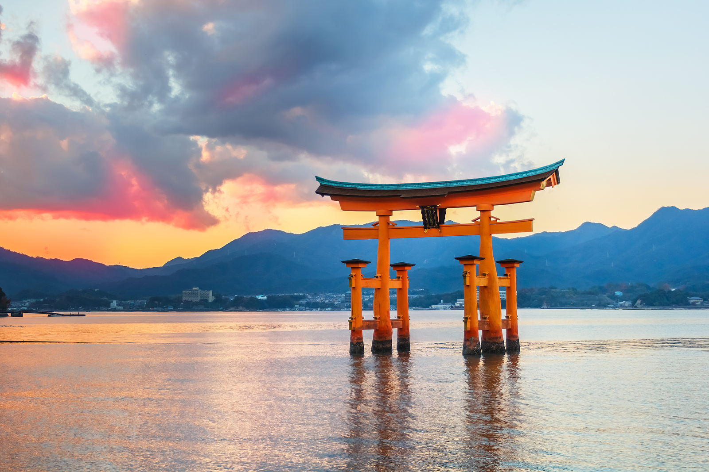

Japán - A Felkelő Nap Országa

Japán, a technológiai fejlődés és az ősi hagyományok különleges egyensúlyát megtestesítő
szigetország, Kelet-Ázsiában található. A Csendes-óceán partján fekvő ország négy nagy szigetből –
Honsú, Hokkaidó, Kjúsú és Sikoku – valamint több ezer kisebb szigetből áll.
A világszerte ismert japán kultúra a hagyományos és a modern elemek ötvözetét kínálja: a zen kertek
és a sintoista szentélyek békés nyugalmától kezdve a nyüzsgő metropoliszok, mint Tokió és Oszaka
futurisztikus neonfényeiig. Japán gasztronómiája is különleges élményt nyújt, hiszen a sushi, a
ramen és a tempura világszerte népszerű fogások.
A természetkedvelők számára Japán lenyűgöző látványt nyújt: a hófödte Fudzsi-hegy, a tavaszi
cseresznyefa-virágzás (szakura), a festői rizsföldek és az őszi juharlevelek vöröslő árnyalatai mind
felejthetetlen élményt nyújtanak. Az ország híres vendégszeretetéről és a mindennapi életet átható
udvariasságáról, amely mélyen gyökerezik a japán társadalomban.
Japán történelme, természeti szépségei és modern csodái miatt az egyik legizgalmasabb úti cél a
világon, amely egyszerre kínál spirituális elmélyülést és vibráló, pezsgő életet.
Történelme

Japán történelme több mint kétezer éves múltra tekint vissza, amely során az ország számos politikai,
kulturális és társadalmi változáson ment keresztül. Az első ismert civilizációk a Kr. e. III.
évezredben jelentek meg, amikor a Jómon-korszak (Kr. e. 14 000 – Kr. e. 300) emberei fejlett
kerámiákat és halászó-vadászó életmódot folytattak. A későbbi Jajoi-korszakban (Kr. e. 300 – Kr. u.
300) a mezőgazdaság, a fémmegmunkálás és a társadalmi hierarchia is kialakult.
A középkorban a szamurájok és a sógunok uralták Japánt, különösen a Kamakura- (1185–1333), Muromacsi-
(1336–1573) és Edo-korszakban (1603–1868). Ez utóbbi időszakban Japán hosszú időre elszigetelődött a
külvilágtól, miközben belső stabilitását és kulturális fejlődését erősítette. A 19. század közepén
az 1868-as Meidzsi-restauráció nyitotta meg az utat a modernizáció és a nyugati hatások előtt, ami
Japán gyors ipari fejlődését eredményezte.
A 20. század során Japán jelentős szerepet játszott a világtörténelemben, különösen a második
világháborúban, amely után az ország demokratikus átalakuláson ment keresztül és gazdasági
nagyhatalommá vált. Ma Japán egy fejlett, technológiailag innovatív ország, amely mélyen tiszteli
múltját, miközben folyamatosan alakítja jövőjét.